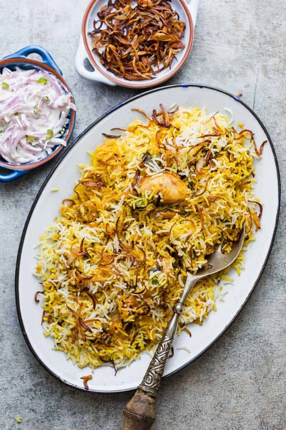

The Ultimate Momo and Biryani Eating Experience
You need to enter your city name and my website will give you the best momos and Biryani selling area in that area
Authentic. Awesome.
Momos are extremely popular among the natives of the Indian subcontinent, and can be found in every kind of shops from restaurants to street vendors.

Authentic. Awesome.
Biryani is a mixed rice dish with its origins among the Muslims of the Indian subcontinent. It can be compared to mixing a curry, later combining it with semi-cooked rice separately. This dish is especially popular throughout the Indian subcontinent, as well as among the diaspora from the region
